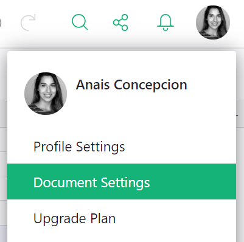

Glossary#
Bar Chart#
This is a classic chart type, where the values in a column are shown as the heights of a series of rectangles.
Column#
A column is a vertical series of cells in a table. Columns in Grist have names. Each cell in a column is in a different row. When data from a column is present within a card, we call it a field. When a table of data is represented as a chart, we refer to each column as a series. From a data modeling perspective, columns typically have data about a single aspect of many real world entities, whereas rows have data about many aspects of a single entity.
Column Options#
Every column’s appearance and behavior can be customized by clicking on the column header, clicking on the drop-down, and selecting “Column Options”.
Column Type#
Columns have types, which control the appearance of cells in that column and the method used to edit them. You can change the column type at will. The Text Column Type is suited to strings of any length; the Date Column Type is specialized for storing and editing calendar dates; the Reference Column Type is for storing and editing links to other tables; the Numeric Column Type is for any kind of number; etc.
Creator Panel#
The creator panel is the right-side menu of configuration options for widgets and columns.
Dashboard#
A dashboard is just another name for a page, typically organized to give a summary or overview of a document’s data. Grist is well suited to constructing dashboards, by creating pages with suitably linked widgets.
Data Table#
Data is stored in tables. Tables have named columns, and a sequence of rows
containing values for those columns. Every row has a numeric id (available
as $id in formulas) that is unique within that table. The raw data page lists all data tables in your document.
Document#
A Grist document is a collection of related data. If you work with databases, think of it as a single database. If you work with spreadsheets, think of it as a single spreadsheet.
Like databases and spreadsheets, the data in a Grist document is organized as a set of tables. How this data is viewed and edited is unusually flexible. Grist documents are organized visually into pages. Pages contain widgets that offer different ways to view and edit tables.
To work with Grist, the first step is typically to create a document.
Drag handle#
This is an icon to facilitate reorganizing views or lists visually. On a desktop computer, when hovering over a drag handle, the mouse cursor changes. The drag handle for a widget is just to the left of the widget’s title. There is an example of using this drag handle in the investment research demo.
Fiddle mode#
Fiddle mode is a special mode that some Grist documents, such as the ones from the Examples & Templates page, will open in. A document opened in fiddle mode will have a “fiddle” label next to the document title in the top bar.
In fiddle mode, any edit to a document will cause a new, unsaved copy (a.k.a “fork”) of that document to be created; the original document will remain unaffected. The copy can be saved via the “Save Copy” button or menu option.
You can add /m/fork to the end of any document’s URL to make that document
open in fiddle mode (e.g. https://public.getgrist.com/3NsoHE2mWtEp/Lead-list/m/fork).
Field#
A field is a column shown in a Card Widget. The terms column, field, and series are not different in substance, but are different terms that make more sense for different widgets. In a Table Widget, we talk about columns. In a Chart Widget, we talk about series. And in a Card Widget, we talk about fields. A field has layout properties that are meaningful within a Card, but would not be meaningful in other contexts.
Import#
To import into Grist means to take data from other sources (on your computer or on the internet) and place that data in a Grist document. Examples of importing include:
- Take a CSV file on your computer, and create a Grist document with the same content (see: start a new Grist document).
- Take an Excel file on your computer, and add the data from it to an existing Grist document (see: importing more data).
- Take a JSON file on the internet, and add the data from it to an existing Grist document (see: importing more data).
- Calling Grist’s API from a program and adding data read from another source (see: Grist API).
Lookups#
Lookup formulas allow you to “look up” data in other tables.
lookupOne allows you to look up a single record in another table by matching some data across two tables, similar to Excel’s VLOOKUP.
lookupRecords allows you to look up multiple records in another table by matching some data across two tables.
Lookups can be combined with dot notation to pull data from referenced records. Learn how.
Page#
Grist documents are organized visually into pages. Each page allows you to view or edit one or more tables. The nature of these viewers and editors (called “page widgets”) is flexible, as is their layout.
A single table can be viewed (or edited) from multiple widgets in one or many pages. And a single page can contain widgets for viewing (or editing) many tables.
Pages are listed in the document (in the panel on the left). In this list, they may be rearranged and grouped, with several “subpages” nested within a single page.
Pie Chart#
This is a classic chart type, where a circle is sliced up according to values in a column.
Record#
A record is the data in one row of a table, comprising the data in the
individual cells of that row. It has a unique identifier, usually hidden but
available in formulas as id. In a Card Widget or a Card List Widget, a record
is represented by a single card.
Row#
A horizontal series of cells in a table. Each cell in a row belongs to a different column. The data stored in a row is also called a record. Typically rows have data about different aspects a single entity, whereas columns have data about a single aspect of many entities.
Series#
Data from a single column shown in a Chart Widget is called a series. The same data in a Card Widget is called a field, and in a Table Widget is called a column.
Sort#
The order in which rows of a table are shown is called the sort order. An example of changing the sort order of a table is given in the CRM tutorial.
Trigger Formulas#
A trigger formula is a formula that recalculates your data based on a set of conditions that you decide. They also allow you to clean data when a new value is entered (watch webinar), provide a sensible default value for a column or create Time and Authorship stamps.
User Menu#
The user menu is the menu that opens by clicking your profile icon in the top-right of Grist. From there you can manage your profile, add additional Grist accounts that you own, and see a list of team sites to which you have access.
Depending on where you are, the user menu will contain additional options. For example, from a personal site you’ll see the option to upgrade your plan to a team site. From a team site, depending on your role and permissions, you may be able to manage billing or edit team members. From a document, you’ll find an option to edit document settings.

Widget#
A page contains sections, such as table grids or charts, which we call “page widgets”. They are used for viewing or editing data in tables. Types of page widgets include Card Widgets, Chart Widgets, as well as the classic spreadsheet-style table grid (called a Table Widget).
Widget Options#
Every page widget can have its appearance and behavior customized. How this is done varies between widget, but can always be done systematically by clicking on the three-dot menu on the top right of a widget and selecting “Widget options”.
Wrap Text#
Normally, content that doesn’t fit in the width of a cell is truncated, with “…” indicating that part of the data is hidden. When “Wrap Text” setting is enabled, long lines will wrap, and the cell will get taller to include all content. An example of wrapping is given in the CRM tutorial.